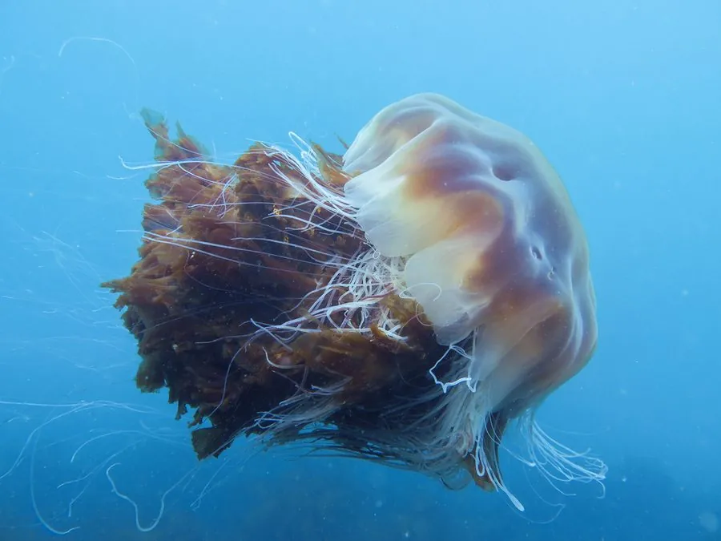

其他无脊椎动物 · 动物界
狮鬃水母 Cyanea capillata

世界上最大的水母之一，伞径可达 2 m，触手长达数十米，生活在寒冷海域，蜇伤可致疼痛和过敏。
- 分类
- 门刺胞动物门纲钵水母纲目旗口水母目科霞水母科属霞水母属
- 栖息环境
- 北极、北大西洋和北太平洋的寒冷海域，表层至较深处
- 地理分布
- 北半球寒冷海域，包括北海、白令海和北太平洋
- 保护级别
- 暂无评估
物种志
狮鬃水母的伞体呈扁平圆盘状，直径通常 30–60 cm，最大记录可达 2 m 以上，颜色多为红褐、黄褐或淡红色。伞缘垂下大量细长的触手，像狮子的鬃毛一样密集，触手最长可达 30 m 以上。
它生活在北极、北大西洋和北太平洋的寒冷海域，是冷水性大型水母的代表。狮鬃水母捕食浮游动物、小鱼和其他水母，靠触手上的刺细胞麻痹猎物。它的生活史包含水螅体和水母体两个阶段，水螅体附着在海底，通过横裂产生小水母。狮鬃水母的蜇伤会引起疼痛、红肿和过敏反应，敏感人群需要及时就医；它在海洋生态中是大型捕食者，也是海龟和翻车鱼的食物，它们的数量受海水温度影响。
形态与习性
- 食性捕食浮游动物、小鱼和其他水母
- 伞径通常 30–60 cm，最大可达 2 m 以上
- 触手细长如狮鬃，最长可达 30 m 以上
- 生活史水螅体和水母体两个阶段，世代交替
- 毒性蜇伤可引起疼痛、红肿和过敏
- 分布北半球寒冷海域
趣味知识
- 狮鬃水母是世界上最大的水母之一，触手可长达 30 米以上。
- 它伞缘的触手密集下垂，看起来像狮子的鬃毛。
- 翻车鱼和海龟会捕食狮鬃水母，是它的主要天敌之一。